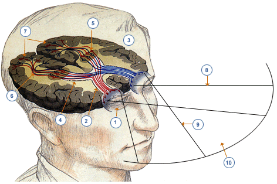

O cérebro é um órgão complexo localizado dentro do crânio e gerencia a atividade do sistema nervoso. Faz parte do Sistema Nervoso Central (CNS). Está localizado na região anterior e superior da cavidade craniana e está presente em todos os vertebrados. Ele flutua no crânio em um líquido transparente, chamado líquido cefalorraquidiano, que o protege tanto fisicamente quanto imunologicamente. O cérebro é um músculo? Embora seja comum dizer que deve ser treinado e exercitado como um músculo para prevenir a atrofia, devemos saber que o cérebro não é um músculo. Ele não é composto de miócitos, como os músculos, mas de milhões de neurônios interconectados por axônios e dendritos. O cérebro regula cada uma de nossas funções cerebrais e corporais, desde respirar, comer ou correr, à capacidade de raciocinar, de se apaixonar ou de argumentar, etc.
